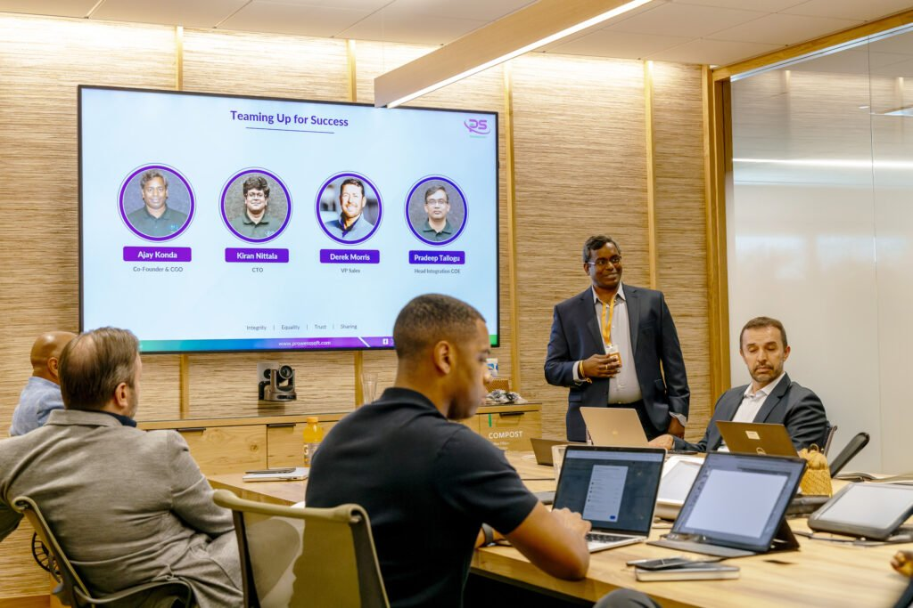

24×7
Coverage live by week 6 — proactive monitoring, incident response, performance optimization.
A six-week stand-up of 24×7 Managed Operations for an existing MuleSoft + Informatica + Agentforce footprint. Defined SLAs, named runbook library, predictable monthly run-rate. Same architects who built the platform also operate it.

Owns the renewed MuleSoft + Salesforce + Informatica contracts. Architects are firefighting incidents instead of building. Wants to convert headcount cost into predictable monthly run.
MuleSoft and Salesforce architects are scarce, and CFOs want predictable run-rates over a permanent bench. Agent Fabric GA Jan 2026 introduces a new SRE surface — Visualizer, Broker, Flex Gateway — that existing MSPs are not yet staffed for.
Coverage live by week 6 — proactive monitoring, incident response, performance optimization.
Response and resolution times by severity, defined and signed at engagement start.
Documented runbook library handed to the customer by week 6 — never held hostage by the MSP.
Predictable monthly run-rate replaces the bench cost of 2–4 senior architects on payroll.
Across MuleSoft Anypoint Platform, CloudHub, Informatica IDMC, and Agentforce.
Kubernetes, Elasticsearch health, infrastructure observability — pre-deployed.
Monitoring UI for scheduling and tracking batch job dependencies.
Runtime debugging tooling included in the operations toolkit.
Cluster Testing Tool and CICD for Kafka Entities — when Kafka is in scope.
The architect who scoped the runbook is on the incident bridge for P1s, not a junior on a script.
Problem. Four MuleSoft architects firefighting CloudHub incidents; net-new build velocity dropped 60%.
Solution. 6-week Prowess Managed Operations stand-up — 24×7 coverage, runbook library, monthly run-rate.
Outcome. Architect bench reallocated to net-new work; production-incident MTTR materially reduced.
Every engagement starts with a working demo of the monitoring stack, a draft SLA table, and the proposed runbook outline — before any commitment.